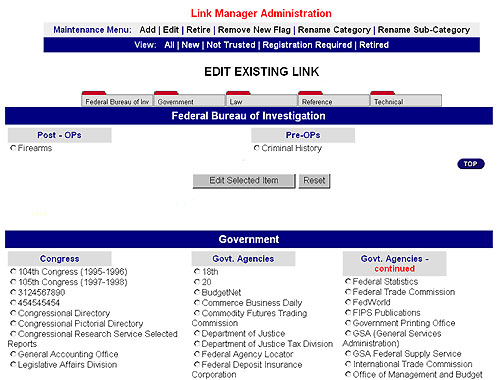

|  |
What I did...
The "Link Manager" is an on-line tool, written in ASP. I wrote all the ASP code, as well as all of the javascript verification code. This tool allows an administrator to enter link information into an on-line form, which in turn is dynamically added to a website. |
©Graphic design and programming by Walter VanderHeide®,
see resume for contact details.
Last modified: October 6, 2000